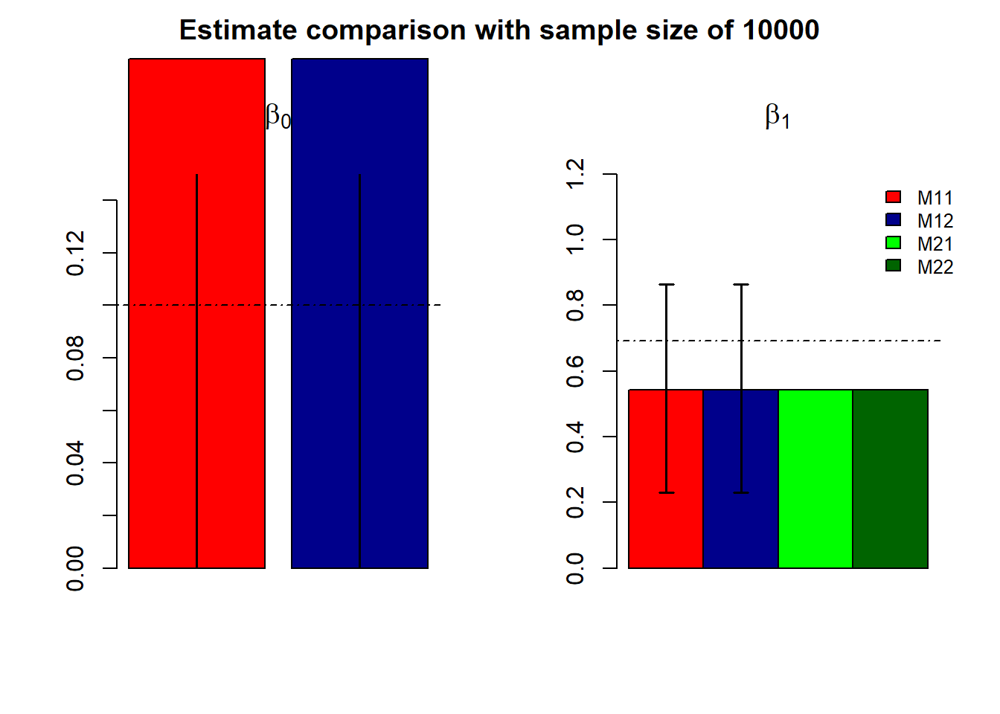
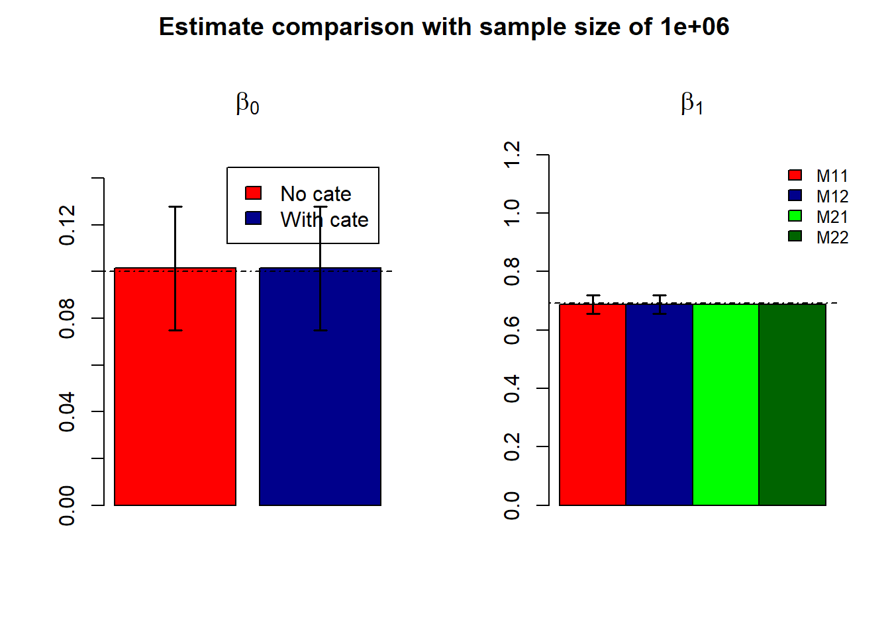
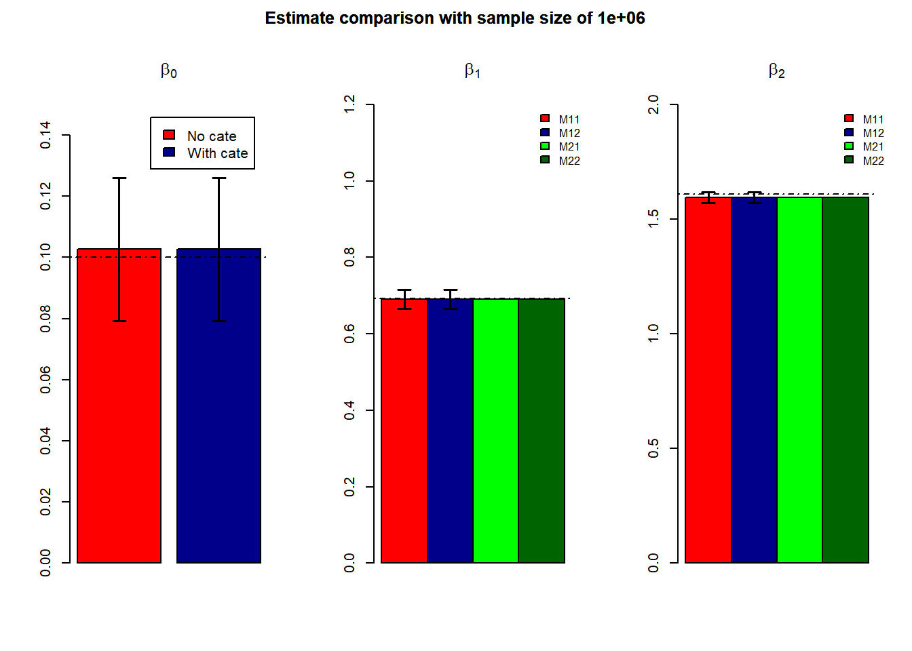
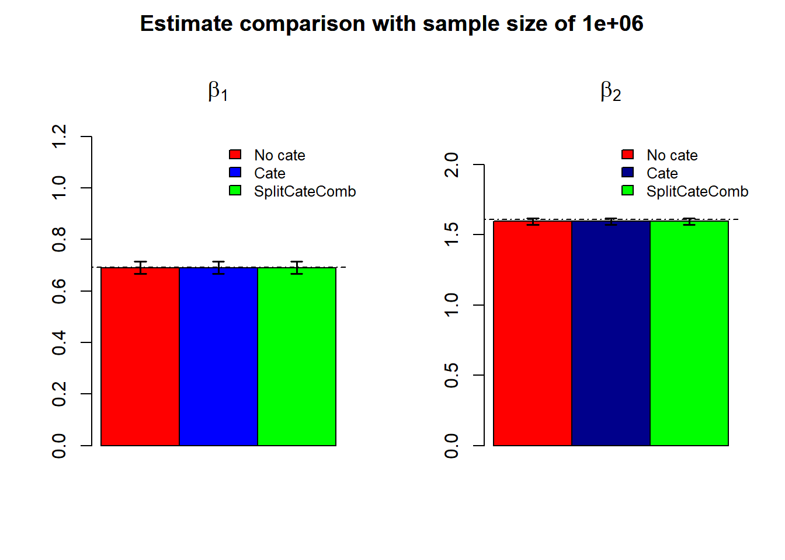
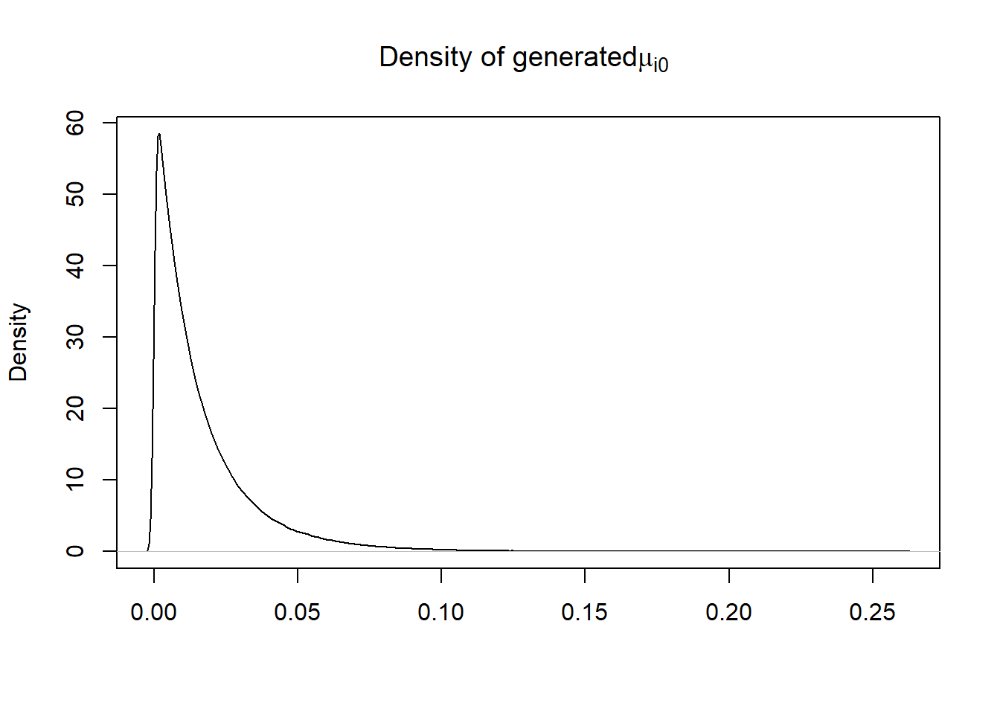
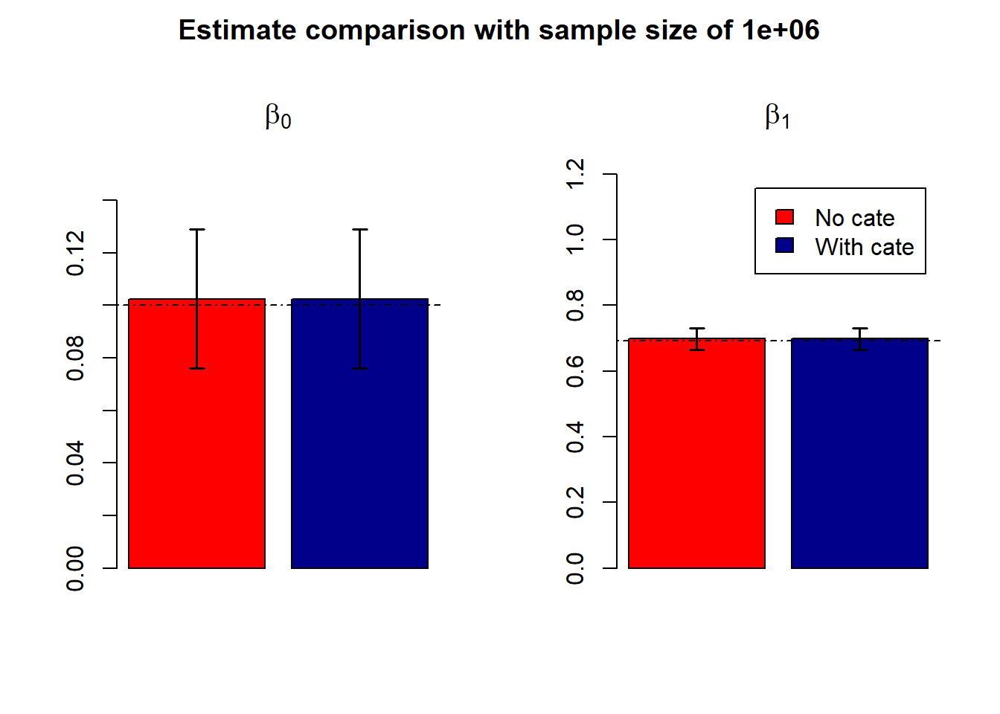
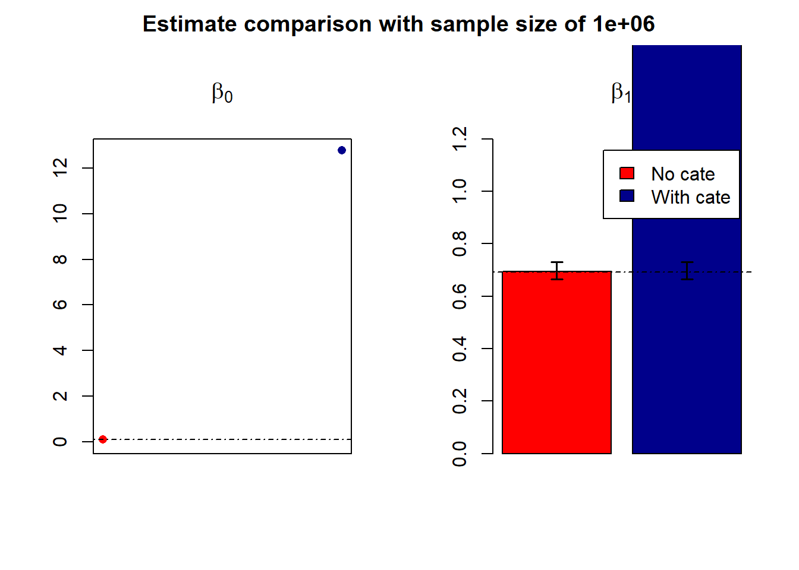

The model generating the data is
\(y \sim Pois(\mu_0e^{\beta_0+\beta_1X})\)
#rm(list=ls())
set.seed(1000)
n <- 10000
baseline.rate=0.01
#regression coefficients
beta0 <- 0.1
beta1 <- log(2)
#generate covariate values
x <- rbinom(n, 1, prob=0.5)
#compute mu's
mu <- exp(beta0 + beta1 * x)*baseline.rate
#generate Y-values
y <- rpois(n=n, lambda=mu)
#data set
data <- data.frame(y=y, x=x)
y0=sum(data$y[data$x==0]); y1=sum(data$y[data$x==1])
cate.data=data.frame(y=c(y0,y1), x=c(0,1))
fit=glm(data$y~data$x+offset(log(rep(baseline.rate, n))), family=poisson())
cate.fit=glm(cate.data$y~cate.data$x+offset(log(c(baseline.rate*sum(x==cate.data$x[1]), baseline.rate*sum(x==cate.data$x[2])))), family=poisson())
fit.conf=confint(fit)## Waiting for profiling to be done...cate.fit.conf=confint(cate.fit)## Waiting for profiling to be done...
## Waiting for profiling to be done...
## Waiting for profiling to be done...
When there are 2 covariates
## Waiting for profiling to be done...
## Waiting for profiling to be done...
## Waiting for profiling to be done...
## Waiting for profiling to be done...
## Waiting for profiling to be done...
In most cases, we never know the true baseline mutation rate, so we may have to use their estimates
## Waiting for profiling to be done...
## Waiting for profiling to be done...

#fit=glm(data$y~data$x+offset(log(rep(sum(data$y)/n, n))), family=poisson())
fit=glm(data$y~data$x+offset(log(rbeta(n,1, 100))), family=poisson())
#cate.fit=glm(cate.data$y~cate.data$x+offset(log(c(sum(cate.data$y)/n*sum(x==cate.data$x[1]), sum(cate.data$y)/n*sum(x==cate.data$x[2])))), family=poisson())
cate.fit=glm(cate.data$y~cate.data$x+offset(log(rbeta(2,1,100 ))), family=poisson()) 
This R Markdown site was created with workflowr